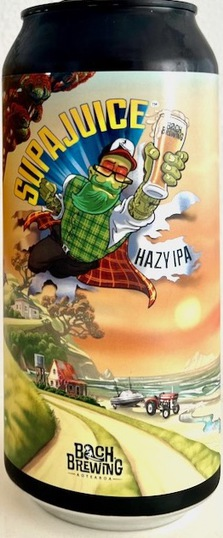
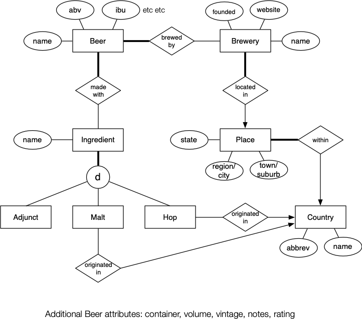

COMP3311 Week 3 Tuesday Lecture
COMP3311 22T3 ♢ Week 3 Tuesday Lecture ♢ [0/14]
In today's lecture ...
- Assignment 1
- Insert, delete, update
- SQL Query Language
Things to do ...
- Quiz 2 due before Friday midnight
- Set up your PostgreSQL server
(450 students have logged in to vxdb2 and have /localstorage)
COMP3311 22T3 ♢ Week 3 Tuesday Lecture ♢ [1/14]
Beer Database, with info on
- Beers: particular batches of beer (name,style,etc.)
- Breweries: places that make beer
- Ingredients that go into making beer (e.g. hops, malt)
Goal: write some SQL and PLpgSQL code to extract info
Due: 11:59pm Friday 17 March (end week 5)
Supplied: ass1.sql template, ass1.dump
Submit: ass1.sql
COMP3311 22T3 ♢ Week 3 Tuesday Lecture ♢ [2/14]
Beer cans often have whimsical labels ...

COMP3311 22T3 ♢ Week 3 Tuesday Lecture ♢ [3/14]
❖ Know Your Product ... (cont) | |
Sometimes they have scary, but relevant, labels ...
COMP3311 22T3 ♢ Week 3 Tuesday Lecture ♢ [4/14]
❖ Know Your Product ... (cont) | |
Properties of beers
- name = random sequence of words thought up by brewer
- ABV = strength = percentage alcohol by volume
- IBU = bitterness = international bitterness units
- style e.g. lager, pale ale, IPA, stout, porter, saison
- brewed by = which brewery made the beer
- vintage = year brewed (most beers consumed within 6 months)
- ingredients = combination of hops, grains (malts), adjuncts
- others e.g. colour, mouthfeel, head, brewing notes, ...
COMP3311 22T3 ♢ Week 3 Tuesday Lecture ♢ [5/14]
ER design for beer database:

COMP3311 22T3 ♢ Week 3 Tuesday Lecture ♢ [6/14]
How to do the assignment
- make database (
createdb, load ass1.dump)
- repeatedly ...
- fill in templates in
ass1.sql
- load
ass1.sql into database (psql -f or \i)
- run query to check if result correct
- submit
ass1.sql
Need to complete views Q1-Q10 and functions Q11 and Q12
Can define as many axuiliary views/functions as you like
Must be included in ass1.sql, and ass1.sql must load in one pass
COMP3311 22T3 ♢ Week 3 Tuesday Lecture ♢ [7/14]
How we test your submission ...
vxdb2$ dropdb ass1
vxdb2$ createdb ass1
vxdb2$ psql ass1 -f ass1.dump > /dev/null
vxdb2$ psql ass1 -f ass1.sql > .errs 2>&1
vxdb2$ grep ERR .errs
vxdb2$ psql ass1 -f check.sql
vxdb2$ psql ass1 -f run_tests.sql
ass1.sql must load into a newly built DB without error
COMP3311 22T3 ♢ Week 3 Tuesday Lecture ♢ [8/14]
Once a database is built, can make a complete copy in a text file
- the whole schema (including types, constraints, etc), and all data
by running the command
$ pg_dump -O -x DatabaseName > DumpFileName
and can make a new copy via
$ createdb newdb
$ psql newdb -f DumpFileName
We often supply databases using pre-built dump files
COMP3311 22T3 ♢ Week 3 Tuesday Lecture ♢ [9/14]
psql is PostgreSQL's shell (cf. bash)
Allows you to execute ...
- SQL commands (e.g.
select, update, ...)
- meta commands (e.g.
\d, \e, \x, \timing...
SQL commands: terminated by
;, can extend over multiple lines
Prompt changes
-
dbname=# = ready to start a command
-
dbname-# = in middle of command, waiting for ;
-
dbname'# = in middle of string, waiting for '
COMP3311 22T3 ♢ Week 3 Tuesday Lecture ♢ [10/14]
❖ Exercise: Exploring the Beer Database | |
Explore the ass1 database using psql
- what are the tables?
- how many beers are there?
- are there any views? any functions?
- what style of beer is Toohey's New?
- what is the longest beer name?
- what is the most ridiculous beer name?
COMP3311 22T3 ♢ Week 3 Tuesday Lecture ♢ [11/14]
Three basic mechanisms:
-
insert ... add a new tuple
-
delete ... remove tuples satisfying a condition
-
update ... modify tuples satisfying a condition
Examples of using
insert
insert into Student(id,name,degree)
values (5654321,'John',3778);
insert into Student(name,degree)
values ('John',3778) returning id;
insert into Student(id,name,degree)
values (default,'John',3778);
COMP3311 22T3 ♢ Week 3 Tuesday Lecture ♢ [12/14]
SQL commands for changing data in a database
insert into Table values ( Val1, Val2, ... )
delete from Table where Condition
update Table set Field = Value where Condition
create table Table ( Attributes/Constraints )
drop table Table
copy Table ...
PostgreSQL commands for manipulating databases
createdb DatabaseName
dropdb DatabaseName
pg_dump DatabaseName > DumpFile
psql DatabaseName -f DumpFile
COMP3311 22T3 ♢ Week 3 Tuesday Lecture ♢ [13/14]
❖ Exercise: Delete/Update Examples | |
Carry out the following actions on the beer database:
- Increase the prices for beers by 10%
- Remove all beers selling for more than 5.00
- Remove all drinkers who live in Randwick
- Close down the Royal in Randwick
COMP3311 22T3 ♢ Week 3 Tuesday Lecture ♢ [14/14]
Produced: 2 Mar 2023